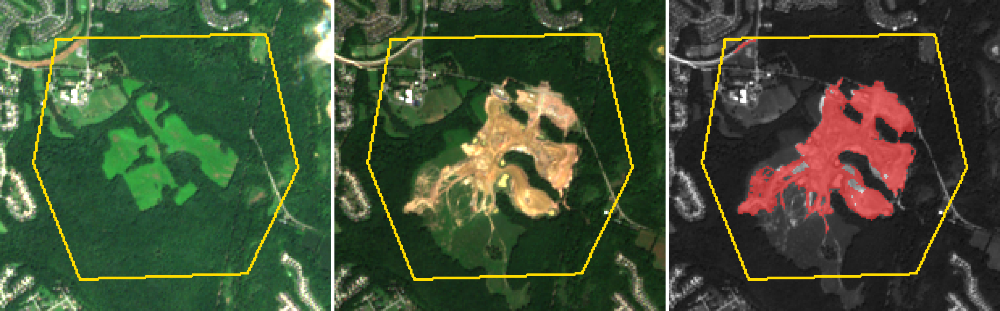
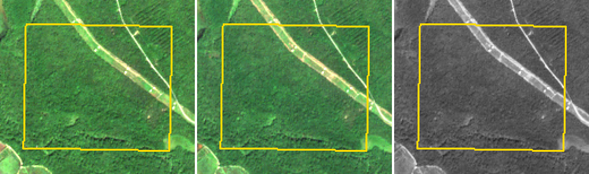
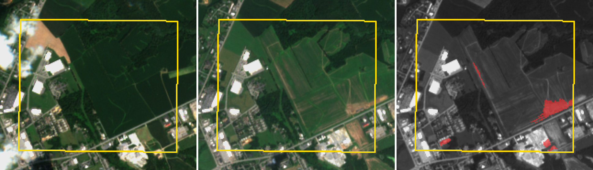
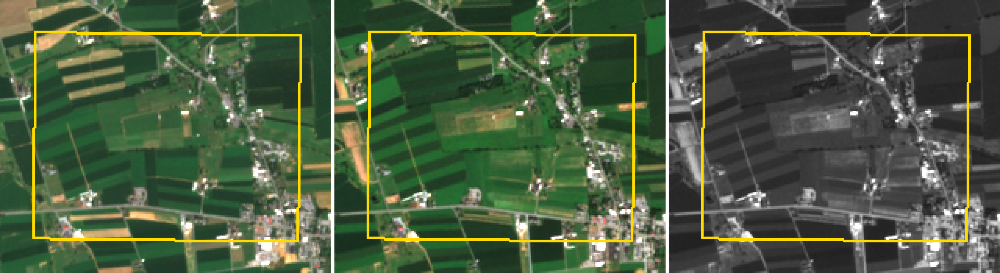

Parcel change report
Baseline 2023-06-01 to 2023-09-15 compared with 2025-06-01 to 2025-09-15.
Generated 2026-11-04 02:22 UTC.
| Parcel | Result | Loss (ha) | Parcel (ha) | Observed |
|---|
| Demo A: wooded tract cleared 2024-25 (hypothetical boundary) | Possible vegetation loss | 43.95 | 212.2 | 100% |
| Demo B: mature forest, expected no change (hypothetical boundary) | No change found | 0 | 144.1 | 100% |
| Demo C: fields beside an industrial park (hypothetical boundary) | Possible vegetation loss | 6.15 | 249.1 | 100% |
| Demo D: farmland with crop rotation, expected no change (hypothetical boundary) | No change found | 0 | 227.2 | 100% |
Demo A: wooded tract cleared 2024-25 (hypothetical boundary)
Tile 18SUJ · before image S2B_18SUJ_20230808_0_L2A · after image S2C_18SUJ_20250822_0_L2A
· 13 baseline and 13 recent scenes

Left: before. Middle: after. Right: after, with possible loss in red. Yellow line: parcel boundary.
Demo B: mature forest, expected no change (hypothetical boundary)
Tile 18SUJ · before image S2A_18SUJ_20230902_0_L2A · after image S2C_18SUJ_20250822_0_L2A
· 14 baseline and 12 recent scenes

Left: before. Middle: after. Right: after, with possible loss in red. Yellow line: parcel boundary.
Demo C: fields beside an industrial park (hypothetical boundary)
Tile 18SVJ · before image S2A_18SVJ_20230813_0_L2A · after image S2B_18SVJ_20250728_0_L2A
· 11 baseline and 16 recent scenes

Left: before. Middle: after. Right: after, with possible loss in red. Yellow line: parcel boundary.
- 4.42 ha, greenness down 0.52, near 39.22938, -76.05247
- 0.52 ha, greenness down 0.54, near 39.22592, -76.06620
- 0.49 ha, greenness down 0.57, near 39.22588, -76.05333
- 0.46 ha, greenness down 0.32, near 39.23266, -76.06204
- 0.26 ha, greenness down 0.52, near 39.22539, -76.05260
Demo D: farmland with crop rotation, expected no change (hypothetical boundary)
Tile 18TVK · before image S2A_18TVK_20230724_0_L2A · after image S2C_18TVK_20250822_0_L2A
· 11 baseline and 15 recent scenes

Left: before. Middle: after. Right: after, with possible loss in red. Yellow line: parcel boundary.